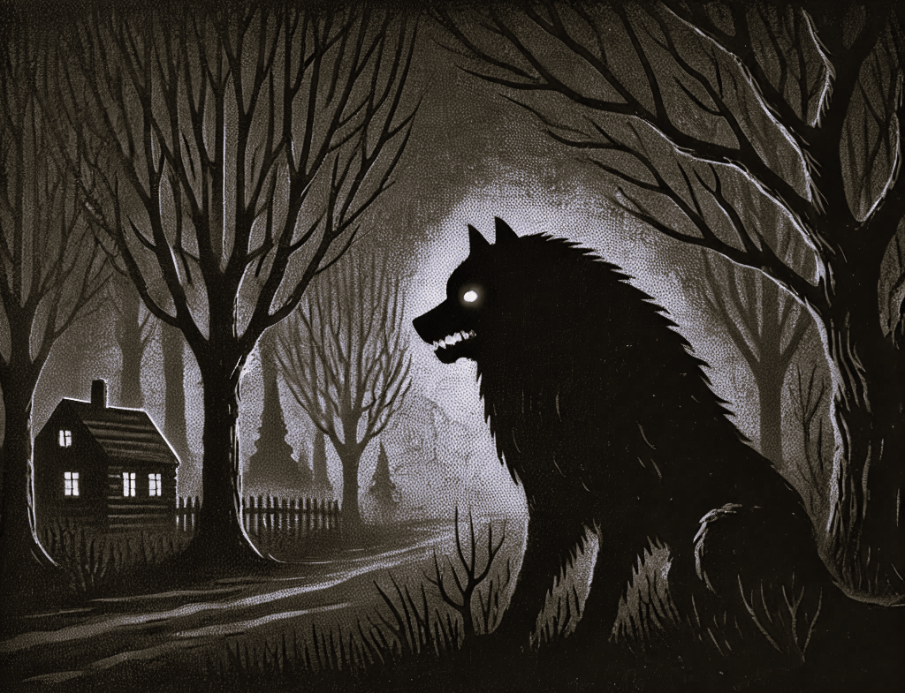

Am späten Abend wurde in der Nähe von Michelbach ein großer schwarzer Hund gesichtet. Augenzeugen berichten von einem imposanten, aber bedrohlichen Erscheinungsbild des Tieres. Der Hund soll ungewöhnlich groß gewesen sein und glühend rote Augen gehabt haben, was zu zahlreichen Spekulationen und Besorgnis in der Umgebung führte.
Lokale Bewohner vermuten, dass es sich um eine Erscheinung handeln könnte, die mit den alten Legenden über Schutzgeister oder Vorboten des Unheils zusammenhängt. Andere sind der Ansicht, dass es lediglich ein entlaufenes Tier sein könnte.
Samuel Hope selbst hat angekündigt, sich der Sache anzunehmen. Er wird den Ort der Sichtung besuchen, um festzustellen, ob es sich hierbei um ein natürliches Phänomen oder ein übernatürliches Ereignis handelt.
